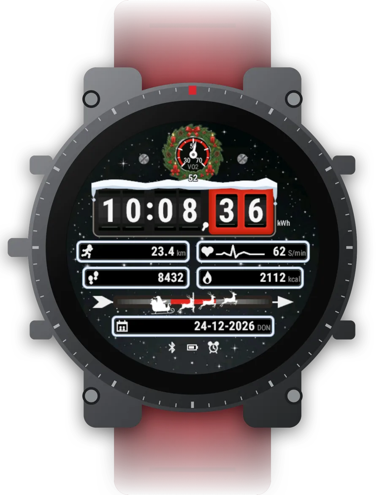
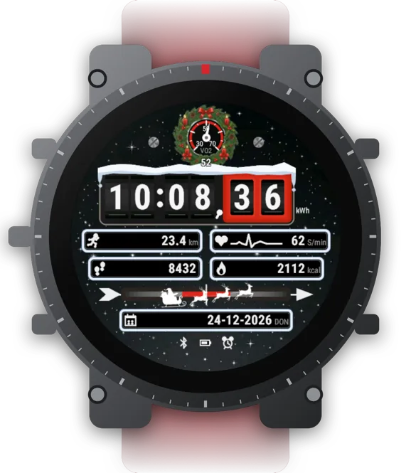

Garmin Watch Face · Freischaltung
GasDefizit XMas
Weihnachten auf dem Zählwerk.
Die Uhrzeit läuft als Rollenzählwerk mit Schneehaube, die Sekunden stehen in roten Kästchen. Darüber zeigt ein Zeiger im Adventskranz deine VO2max, und jeden Morgen fliegt ein neues Weihnachtsbild über das Zifferblatt.
- 25 Weihnachtsszenen
- 5 Datenfelder
- 40 runde AMOLED-Uhren
- Einmal zahlen, alle Einstellungen frei
- Lizenzschlüssel für 2 Geräte
- Die Watch-Face selbst ist gratis
Die Zahlung läuft über Dodo Payments im Testmodus. Danach zeigt dir die nächste Seite deinen Lizenzschlüssel, per E-Mail kommt er auch.

Ein Schlüssel, alles frei
Installieren kostet nichts. Ohne Schlüssel bekommst du das volle Weihnachtszifferblatt mit den Standardfeldern. Mit Schlüssel stellst du alles selbst ein.


| Funktion | Gesperrt | Frei |
|---|---|---|
| Uhrzeit als Zählwerk mit Sekunden | ||
| VO2max im Adventskranz, Datum, Status-Icons | ||
| Lauf-km, Puls, Schritte, Kalorien | ||
| Jeden Tag um 6:00 eine neue Szene | ||
| 5 Felder aus 8 Datenarten wählen | ||
| Szene nach Tageszeit oder stündlich | ||
| Jedes Element ein- oder ausblenden |
Was drauf ist
Uhrzeit als Zählwerk
24 Stunden auf Walzen mit Schneehaube, die Sekunden in Rot.
VO2max im Adventskranz
Deine Lauf-VO2max als Zeiger mitten im Kranz. Halten öffnet die VO2max-Ansicht der Uhr.
25 Weihnachtsszenen
Santa, Rentiere und Nerd-Icons fliegen nach dem Heben des Handgelenks durchs Band.
Puls mit EKG-Linie
Aktueller Puls, daneben tickt jede Sekunde eine kleine EKG-Linie.
Fünf Datenfelder Mit Schlüssel
Lauf, Rad, Schwimmen, Klettern, Training, Puls, Schritte, Kalorien.
Drei Szenenmodi Mit Schlüssel
Täglich um 6:00, nach Tageszeit oder jede Stunde.
Zeig, was du brauchst Mit Schlüssel
VO2, Szene, Datum, Bluetooth oder Wecker ausblenden.
Gemacht für AMOLED
40 runde AMOLED-Uhren. Mit „Immer an“ zeigt die Uhr nur die Uhrzeit.
25 Weihnachtsbilder
Um 6:00 Uhr kommt das nächste Bild der Reihe, los geht es mit Santa und seinen Rentieren. Mit Schlüssel wechselt die Szene auch nach Tageszeit oder jede Stunde.
- Täglich um 6:00
- Tageszeit Mit Schlüssel
- Stündlich Mit Schlüssel
- 0Santa mit Rentieren
In vier Schritten frei
Kaufen
„Buy now“ antippen und im Testmodus mit einer Testkarte bezahlen.
Schlüssel kopieren
Nach der Zahlung zeigt dir die Seite deinen Lizenzschlüssel. Er kommt auch per E-Mail.
In Connect IQ eintragen
Connect-IQ-App › Meine Watch Faces › GasDefizit XMas › Einstellungen › Aktivierungscode
Speichern und synchronisieren
Lass das Handy online und mit der Uhr verbunden, bis die Uhr den Schlüssel geprüft hat. Danach bleibt sie frei, auch offline.
Fragen
Ist das ein echter Shop?
Nein. Die Seite gehört zu einer Studienarbeit an der Technischen Hochschule Augsburg („Design und Implementierung e-Shop“). Dodo Payments läuft im Testmodus, du bezahlst mit einer Testkarte und es wird nichts abgebucht.
Auf welchen Uhren läuft die Watch-Face?
Auf 40 runden AMOLED-Uhren von Garmin mit Connect IQ 5.2 oder neuer, zum Beispiel Forerunner 165, 265 und 965, Venu 3, vívoactive 5 und 6, fēnix 8 und epix Pro. Uhren mit MIP-Display sind nicht dabei.
Wie viele Uhren kann ich freischalten?
Ein Schlüssel gilt für 2 Geräte. Ein drittes Gerät lehnt die Prüfung ab.
Ich habe die Watch-Face per USB kopiert. Geht das auch?
Nein. Den Schlüssel trägst du in den Einstellungen der Connect-IQ-App ein, und die gibt es nur, wenn die Watch-Face aus dem Connect IQ Store oder als Beta installiert ist.
Woran sehe ich, ob die Uhr frei ist?
Auf der Uhr im Menü „Anpassen“ der Watch-Face. Der Eintrag „Status“ zeigt „Freigeschaltet“ oder „Gesperrt“.
Ich habe meinen Schlüssel verloren.
Er steht in der E-Mail, die du nach der Zahlung bekommen hast. Schau auch im Spam-Ordner nach.
Frohe Weihnachten am Handgelenk
Ein Schlüssel, alle Einstellungen, zwei Uhren.
2,49 USD Demo Buy now